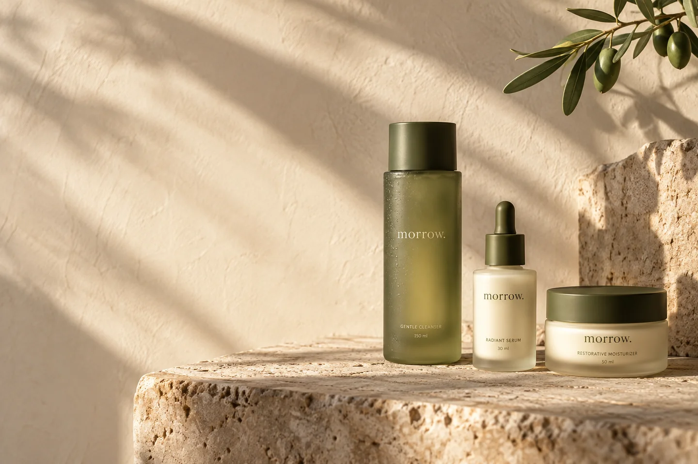
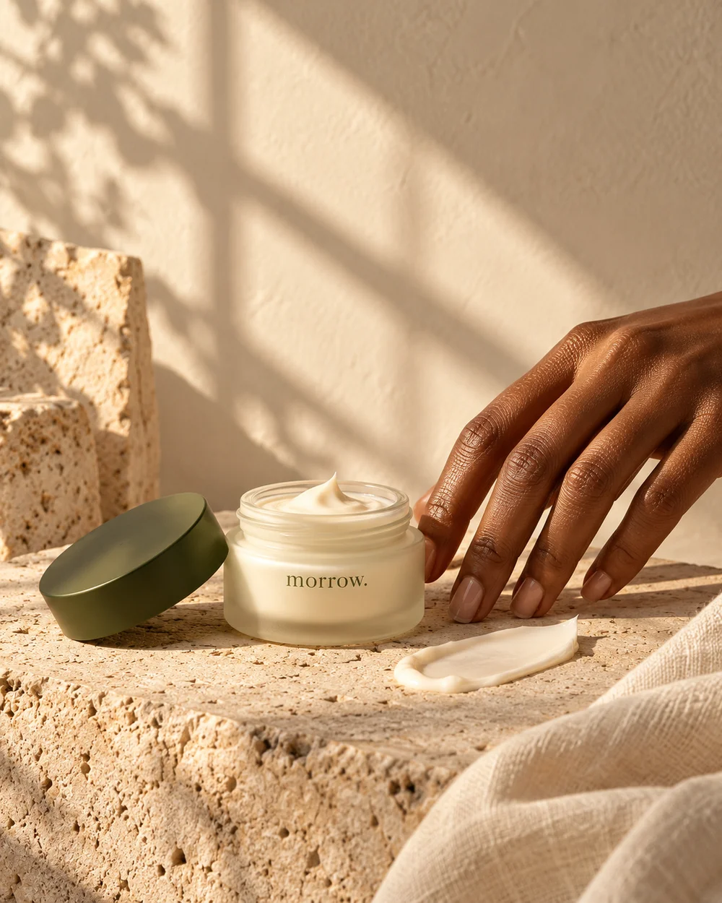
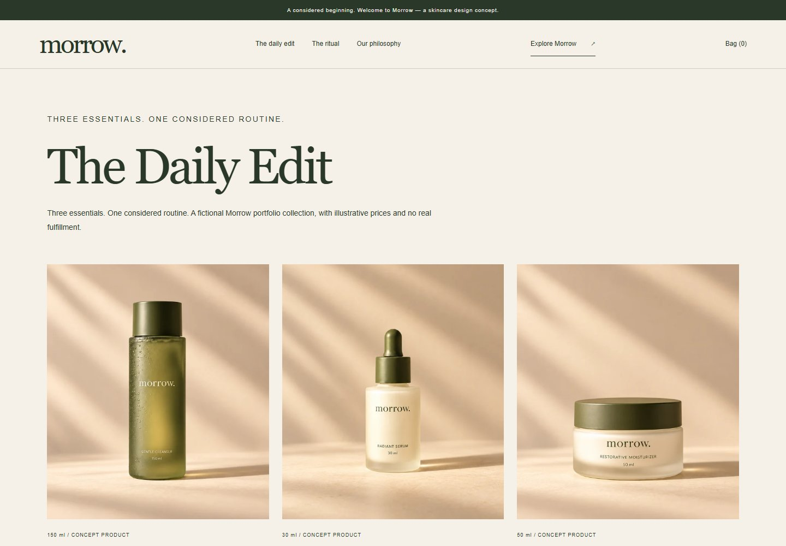
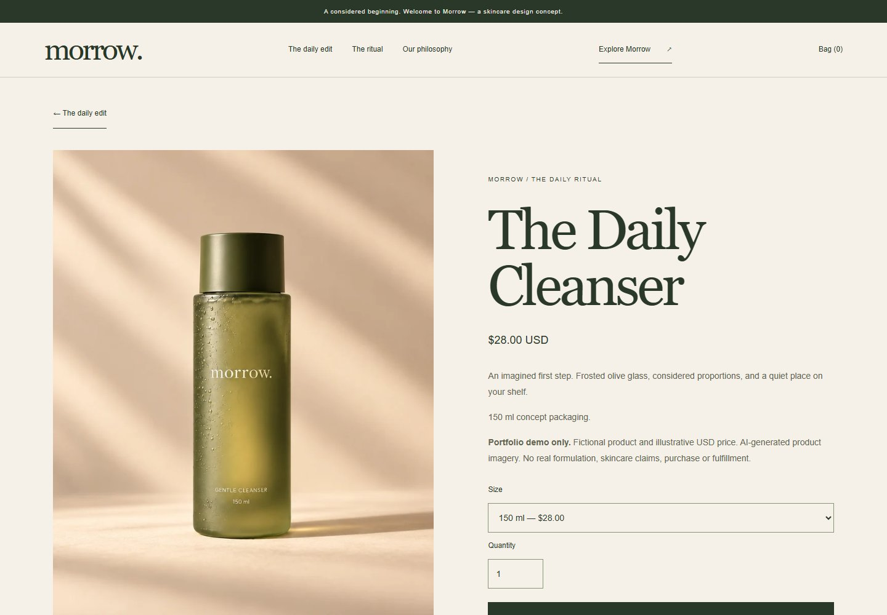
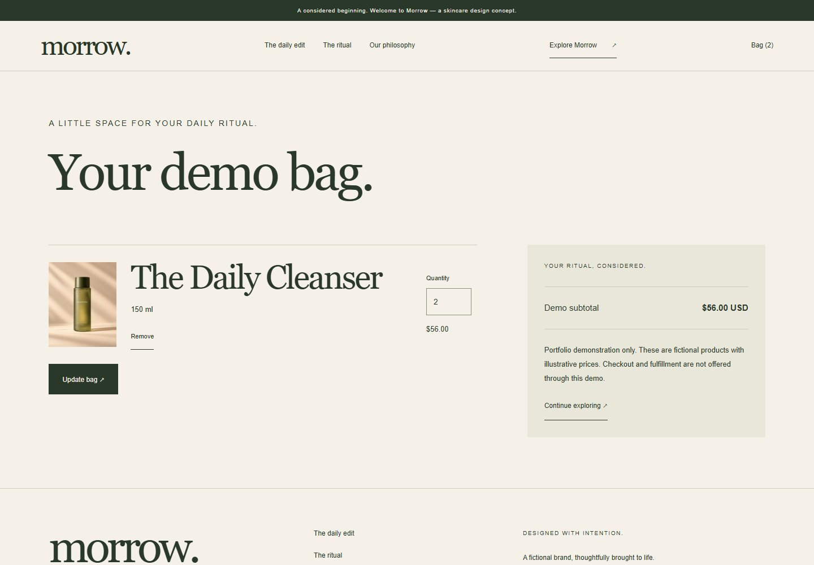

Paper
#F5F1E8Olive
#293828Stone
#E9E6DA
#F5F1E8Olive
#293828Stone
#E9E6DA
Color follows material.
Paper, olive and stone connect the interface to the packaging. A dark olive action button creates a clear next step against the warm, quiet surface.
MORROW / SELF-INITIATED SKINCARE CONCEPT
A skincare identity built around everyday ritual. Warm art direction, considered packaging and a Shopify storefront that carries the idea all the way to the bag.
Explore the Shopify demoVisitor password: suweid
Fictional products. No real sales.

01 / THE BRIEF
Design a fictional skincare brand for someone who wants a simple daily routine. Turn that idea into a Shopify experience that feels calm without obscuring the essentials: what each product is, what it costs and how to add it to the bag.
The scope spans a three-product identity, packaging concepts, campaign imagery and custom storefront sections. The practical constraint is a working Shopify catalog, rather than a homepage that stops at the first impression.
02 / DESIGN DECISIONS
Paper, olive and stone connect the interface to the packaging. A dark olive action button creates a clear next step against the warm, quiet surface.
Georgia gives the brand a softer voice. Arial keeps product details, prices and controls direct. The contrast lets the atmosphere and the shopping task coexist.
Cleanse, serum, moisturize. The same sequence appears in the collection and ritual section, giving three fictional products a clear place in the story.

03 / ART DIRECTION
Stone, linen and side light give the packaging a tactile context. Campaign compositions leave room for the headline; closer product images keep the collection easy to compare.
The visual direction carries into packaging scale, label placement and the balance between image and type. These are AI-generated concept visuals, rather than photographs of manufactured products.
Explore the daily edit04 / THE SHOPIFY BUILD
Custom Liquid sections sit on the Horizon foundation. The homepage and collection use Shopify product data; each product page exposes its image, illustrative price, size and quantity before the add-to-bag action.
The demo bag uses Shopify line items and totals, with quantity updates and removal. A persistent bag link keeps that journey accessible, including on mobile.
Homepage copy, campaign image and featured collection are editable in the theme editor. This keeps the visual system connected to the way a storefront is maintained.
05 / DEMO CHECKS · 3 OCTOBER 2026
The cleanser, serum and cream display their images, sizes and illustrative USD prices. Each has an enabled add-to-demo-bag action.
Adding a $28 cleanser, updating the quantity to two at $56, and removing the item were checked in the Shopify demo.
The portfolio reflows from paired layouts to single columns. The Shopify collection, product page and bag remain explorable on mobile.
The demo provides a shopping bag without a checkout action or real fulfillment. No clinical or commercial results are claimed.
THE SHOPIFY EXPERIENCE
Browser captures of the existing Shopify demo on 3 October 2026. The typography refinements in this branch await a separate theme upload.



PROJECT CONTEXT
Morrow is a fictional brand and self-initiated portfolio project by Oviks Media, developed with AI assistance for copy, imagery and theme implementation. It is not commissioned client work.
The products, packaging and prices are illustrative. No real formulation, clinical claims, customer reviews or sales results are represented. The separate Shopify demo is password protected.
Shopify visitor password: suweid
Explore the Shopify demo